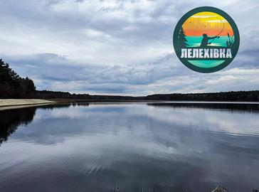

Лелехівка
Лелехівка — молода спортивна водойма в Яворівському районі, що пропонує комфортні умови для відпочинку та результативної риболовлі.
Основні водойми серії STOLAR CARP. Тут відбуваються етапи сезону, розбиття на зони та народжуються трофейні Big Fish.
Лелехівка — молода спортивна водойма в Яворівському районі, що пропонує комфортні умови для відпочинку та результативної риболовлі.
Пристань — спортивна водойма з трофейним коропом і білим амуром, із хорошими умовами для активної риболовлі
Bounty — спортивна водойма Яворівського району, відома трофейним коропом і реальною боротьбою за Big Fish.